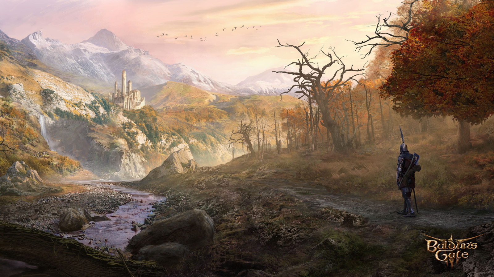
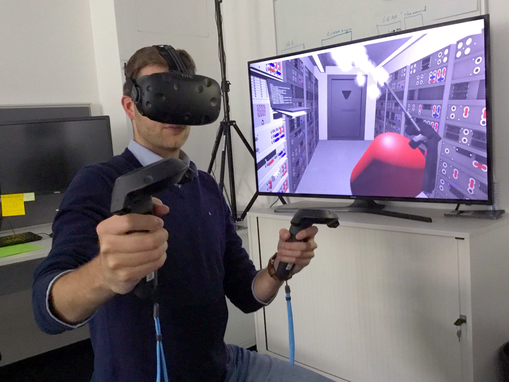
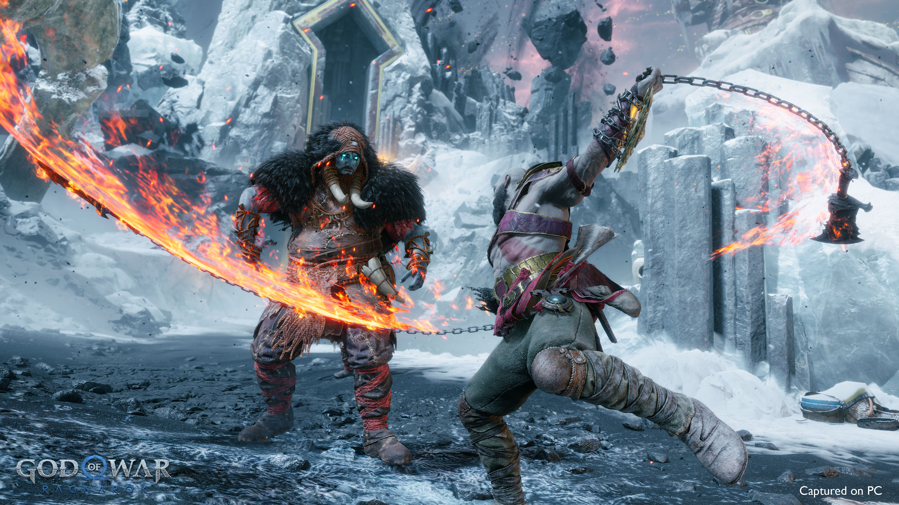
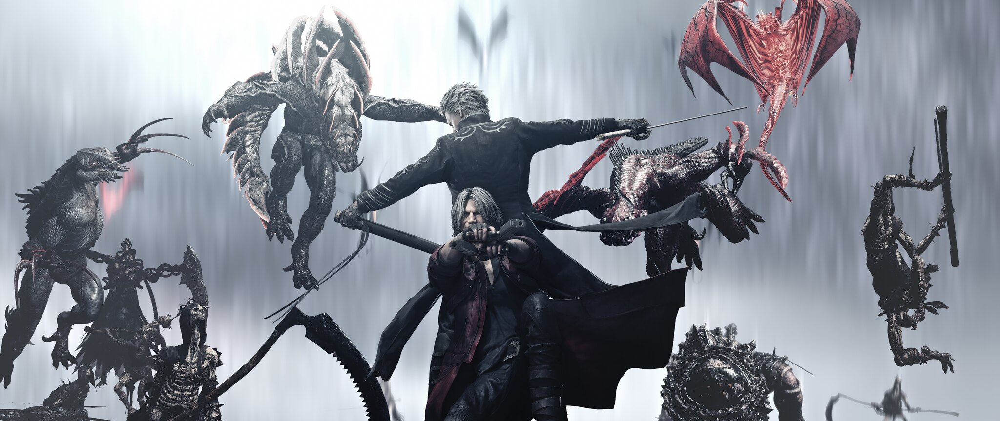

Video Games: The Supreme Form of Art
A "TED Talk" by Mahim2000
Video Games are games that you virtually play on a device, that can be your PC, your Mobile, the Arcade Cabinets in your favorite theme park, dedicated ones like Handhelds and Consoles, your smart toaster, that Oscilloscope you hijacked from your university (Yes you heard it right. You can play the 90's hit First Person Shooter Video Game "DOOM" on those things. "DOOM" runs on anything at this point) etc.
Sorry for that long definition that made little to no sense. You know what Video Games are! I know what Video Games are! And in my opinion, it is, if not, THE BEST form of Art as a whole and the most interactive one at that. Nothing can beat that. And I have my reasons to say that.
- In books or movies, you let your mind or eyes and ears (for the respective mentioned for of art) to be in that world/universe, which almost all the time is a linear experience from start to finish. In Video Games however, you control the characters with your input, as if it's you who is the character in the story. Your action in the videogame dictates the progress in the story of the video game you are playing
- Depending on the Video Game you are playing, you can either have a very linear experience in one game where the beginning and ending is unchanged regardless of how you proceed (like most of the "Call of Duty" games), or you can even have a very tailored experience from start to finish depending on your actions, choices, way of playing etc., like all of it cultiminating into the story going through a very different branching path leading to one ending amongst dozens of others (like you can do in ambitious games like Baldur's Gate 3), making the experience even more lively and interactive. All of which, simply cannot be done in art forms like Movies and Books.
- Books provide a Cognitive and Sensory Experience only. Artwork provides a Visual Experience. Audiobooks and Music provides an Auditory Experience. Movies and Videos provide an Audiovisual Experience. Whereas Video Games provide all of the above with the addition of Interactive Experience where you are in control of what you want to do in that universe. And with newer Technologies like Virtual Reality (VR), Video Games in general is an unbeatably superior art form
- Some Video Games even let you be in an Open Sandbox, where you make your own adventure, your own story, alone or with your friends. This level of interactivity is completely absent in Books or Movies.
- Books, Movies, Comics have re-experiencing values, true. But it wears off eventually. In case of Video Games, specially modern ones with a lot of outcomes and ways to play and even procedurally generated events and outcomes, the Replay Value is unmatched. People spends hundreds and sometimes even thousands of hour on one single game due to how replayable and engaging the said form of art (being Video Game) is.
You can learn more about Video Games are the best form of art from this YouTube video titled "Why Video Games are Art | The Beauty of Play, and How 'Fun' is not the Opposite of Art" by the YouTuber 'The Game Overanalyser''. The video is 8 years old, though that shouldn't matter.




Made with ❤️ by Mahim2000
Connect with Me on LinkedIn and Github
©2026 Mahim2000, Inc.